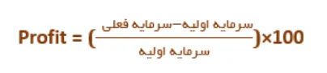
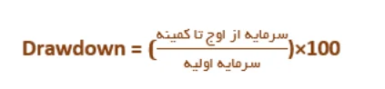
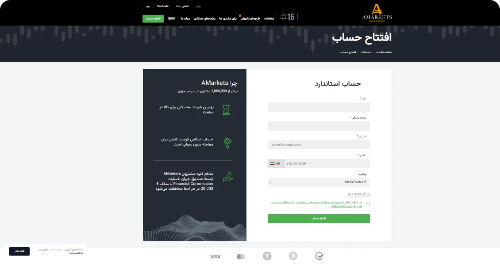

صفر تا صد کپی تریدینگ در فارکس
آیا شما هم از آن دسته افرادی هستید که علاقه مند به انجام معاملات در
بازارهای مالی نظیر فارکس و کسب درآمد دلاری از آن ها هستید اما دانش لازم را
ندارید؟ آیا می توانید به خوبی تجزیه و تحلیل کنید اما استراتژی سودآور
ندارید و در کسب سود ثابت در بازار شکست خوردهاید؟ آیا مشغله کاری شما آنقدر
زیاد است که نمیتوانید تمام وقت خود را به معاملات فارکس اختصاص دهید؟
امروزه، کپی تریدینگ (copytrading)، یکی از روشهای درآمدزایی در فارکس می
باشد که به کاربران این امکان را میدهد که بدون نیاز به تجربهی حرفهای در
بازار فارکس، از موفقیت سرمایهگذاران حرفهای بهرهمند شوند. این نوع
معاملات به دلیل این واقعیت که به معامله گران تازه کار اجازه فعالیت و کسب
درآمد می دهد، به طور فزایندهای محبوب شده است. بنابراین در این مقاله، به
مفهوم کپی ترید فارکس، نحوه انجام کپی تریدینگ و سیستم کپی ترید ربات ATM
ایرانی اکسپرت، بهعنوان یک اکسپرت کپی ترید متاتریدر، پرداختهایم که می
تواند بهترین گزینه برای شما باشد.
کپی ترید یا کپی تریدینگ (copytrading)، یک روش در بازارهای مالی است که به
افراد امکان میدهد تا معاملات و سیاستهای مالی یک سرمایهگذار حرفهای را
تقلید کنند. به عبارت دیگر، شما میتوانید به عنوان یک سرمایهگذار عادی،
معاملات یک سرمایهگذار حرفهای را کپی کرده و به اندازهی آن شخص در بازار
سرمایه حضور داشته باشید.
حال اینکه چگونه کپی ترید کنیم، به این صورت است که شما یک حساب مخصوص باز
کرده و به سیستم مدیریت حساب متصل میشوید. سپس، شما میتوانید یک یا چند
سرمایهگذار حرفهای را انتخاب کرده و معاملات آنها را کپی کنید. هر وقت که
سرمایهگذار حرفهای مورد انتخاب شما یک معامله را انجام دهد، این معامله به
صورت خودکار در حساب شما نیز اجرا میشود.
به این ترتیب، شما از تجربیات و استراتژیهای تریدرهای حرفهای بهره میبرید،
حتی اگر خود تجربهی کمتری در بازار سرمایه داشته باشید. البته، همواره وجود
ریسکها و اینکه ممکن است عملکرد گذشته یک سرمایهگذار نشانگر عملکرد آینده
نباشد، در نظر بگیرید و با دقت و اطلاعات کافی اقدام به انتخاب سرمایهگذاران
حرفهای کنید.


سهولت در شروع:
کپی تریدینگ به شما به عنوان مبتدی و تریدری که تازه وارد دنیای مالی
شده، این امکان را میدهد که بدون دانش عمیق در زمینه مالی، به معامله
بپردازند.
صرفهجویی در زمان:
با استفاده از سیستم کپی تریدینگ، نیازی به تحلیل بازار و اتخاذ
تصمیمات معاملاتی زمانبر ندارید و و در زمان خود صرفهجویی میکنید
افزایش اطمینان:
تریدرها معمولاً از تصمیمات معاملاتی خود مطمئن نیستند. اما با کپی
تریدینگ، معاملات به صورت اتوماتیک اجرا میشوند و این، اطمینان را
افزایش میدهد
متنوعسازی سرمایه:
امکان کپی تریدینگ به تریدران این امکان را میدهد که سرمایه خود را بر
روی چندین استراتژی و تریدر تنوع دهند.
مدیریت ریسک:
کپی تریدینگ به شما این امکان را میدهد که معاملات خود را بر اساس سطح
ریسک تریدر حرفهای مدیریت کنید

عدم کنترل کامل:
شما به عنوان کپیکننده، هیچ کنترلی بر فرآیند تصمیمگیری و اجرای
معاملات ندارید، این ممکن است باعث احساس کمبود کنترل شود
عملکرد گذشته نمیتواند به طور دقیق پیشبینی کننده آینده باشد:
اینکه یک تریدر در گذشته موفق بوده، همیشه تضمینی برای موفقیت در آینده
نیست. بازارهای مالی همواره تغییر میکنند و عملکرد گذشته قطعیتی برای
آینده ندارد
هزینههای اضافی:
برخی از سیستمهای کپی تریدینگ ممکن است هزینههای اضافی به عنوان
کارمزد یا هزینه اشتراک از تریدران کپی شده درخواست کنند
استراتژیهای محدود:
شما فقط به استراتژیها و معاملات تریدر حرفهای محدود هستید و امکان
تغییر در استراتژی یا تصمیمات معاملاتی ندارید.
مخاطرات بازار:
همانطور که در هر نوع سرمایهگذاری مالی، مخاطرات بازار همیشه وجود
دارند، تریدران حرفهای نیز ممکن است در معاملات خود خسارت داشته باشند
و بهطبع، شما نیز متحمل خسارت شوید
در هنگام کپی ترید، معاملات تریدر حرفهای روی حساب شما کپی میشوند و هر
تغییری در سرمایه او (سود یا ضرر) به صورت متناسب در حساب شما نیز اعمال
میشود. این میزانها به شما اطلاع میدهند که چقدر از سرمایه اولیه حساب شما
به دلیل معاملات تریدر حرفهای، افت یا افزایش یافته است.
برای درک بهتر، مفاهیم مهمی که در زمینه کپی ترید استفاده میشوند را توضیح
میدهیم:
1. میزان سود (Profit):
Profit، نشاندهنده تغییر سرمایه مثبت در حساب معاملهگر است که به صورت زیر
محاسبه می شود:

2. میزان ضرر (Drawdown):
Drawdown، نشاندهنده کاهش سرمایه حساب، از اوج به کمینه در یک دوره زمانی
است که به صورت زیر محاسبه میشود:

3.نسبت موفقیت (WinRate):
مهم است که دربررسی استیتمت یک تریدر برای کپی ترید، نه تنها به میزان سود
(Profit) و کاهش سرمایه (Drawdown) بلکه همچنین به نرخ موفقیت (WinRate) نیز
توجه کنید. ، نسبت تعداد معاملات موفق به کل تعداد معاملات است
و معمولاً به صورت درصدی اعلام میشود. این نسبت نشاندهنده احتمال موفقیت
تریدر یا سیستم ترید در انجام معاملات است. به طور کلی، Profit، Drawdown و
WinRate ، سه پارامتر مهمی هستند که به شما کمک میکنند تا ریسکهای مرتبط با
کپی ترید را بهتر درک کنید و تصمیمات به موقعتری در مورد ادامه یا قطع کپی
ترید بگیرید.
لازم به ذکر است که ربات ATM تیم ایرانی اکسپرت نیز در حال حاضر به عنوان یک
اکسپرت کپی ترید در متاتریدر، قابل استفاده توسط معامله گران عزیز میباشد.
استیمنت یک حساب از ربات معامله گر ATM در تصویر زیر قابل مشاهده است:
IRaniExpert Copy trade Statement: Profit: %63 Drawdown: %20 WinRate:%75
استیتمنت بقیه حسابهای ربات، در سایت MyFxbook قابل مشاهده هستند.

به طور کلی، بهترین کپی تریدر درانتخاب بهترین تریدر مرجع برای کپی تریدینگ،
نیاز به مطالعه دقیق و ارزیابی موارد مختلف دارد. در زیر تعدادی از این موارد
آورده شدهاند:
1. بررسی استیتمنت یا سابقه عملکرد:
نگاهی به نتایج گذشته تریدر و تحلیل عملکرد معاملات او میتواند به شما کمک
کند تا درک بهتری از توانایی و استراتژی او داشته باشید.
2. مدیریت ریسک:
تریدر باید استراتژی مشخصی برای تعیین حداکثر افت سرمایه (Drawdown) و
تنظیمات مربوط به مدیریت ریسک داشته باشد.
3. استراتژی ترید:
بررسی نحوه تحلیل بازار و انجام معاملات توسط تریدر میتواند در انتخاب تریدر
مناسب کمککننده باشد.
4. تایم فریم معاملات:
بررسی تایم فریم معاملاتی نیز در انتخاب تریدر میتواند مهم باشد. مثلاً اگر
شما به دنبال ترید در بازارهای کوتاه مدت هستید، تریدری که در این زمینه
تجربه دارد ممکن است گزینه مناسبی باشد.
5. میزان سود و ضرر:
بررسی میزان سود(Profit) و ضرر(DrawDown) تریدریا اکسپرت کپی ترید مورد نظر
نیز بااهمیت است. نه تنها به میزان سود بلکه همچنین به نسبت ریسک به سود
(Risk-Reward Ratio) توجه کنید.
6. شفافیت:
شفافیت درارائه مواردی مانند اسیتمنت، حد ضرر (Stop Loss) و تغییرات در
استراتژی توسط تریدر، بسیار حائز اهمیت است.
8. محدودیتها و شرایط:
بررسی محدودیتها و شرایط کپی ترید تریدرمورد نظر، از جمله حداقل دیپازیت و
هزینههای بروکر مرتبط، نیز مهم است. مطالعه دقیق توافقنامه و شرایط استفاده
میتواند جلوی مشکلات آینده را بگیرد.
میزان ریسک ضرر در کپی تریدینگ فارکس را با چند راهکار می توان کنترل کرد که عبارتند از:

حالا که با مفهموم کپی ترید چیست آشنا شدیم، برای کسب اطلاعات بیشتر، چند سایت کپی ترید برتر را معرفی خواهیم کرد. سایت های کپی تریدینگ به شما این امکان را میدهند که حساب بروکر خود را به یک مرجع مرتبط کنید تا بتوانید از سیگنالهای معاملاتی آن بهرهمند شوید. همانطور که گفته شد، سیستم کپی ترید فارکس برای افراد مبتدی که می خواهند از تحلیل دیگران استفاده کنند مناسب است تا معاملات بهصورت اتومات برای آنها اجرا شود. امروزه، امکان کپی ترید در صرافی های ارز دیجیتال نیز فراهم شده است که توانسته اند از این طریق معامله گران زیادی را به خود جذب کنند.
یکی از بهترین راههای کسب سود در بازارهای معاملاتی که اخیرا بسیار محبوب
شده است.
کپی ترید در متاتریدر است! عمل کپی ترید در متاتریدر 4 و 5 بر طبق سیستم
سیگنالها انجام میشوند و بسیار شبیه به هم هستند. بنابراین، می توانید بسته
به سلیقه و نیاز خود یکی از این ورژنها را برای کپی معاملاتتان انتخاب کنید.
مراحل انجام کپی تریدر در متاتریدر 4 و 5 به ترتیب زیر میباشد: (بهتر است
عکس اجرای این مراحل اضافه شود)
با وجود اینکه متاتریدر 5 (MT5) ویژگیهای پیشرفتهتری را فراهم کرده است،
اما متاتریدر 4 (MT4) همچنان بسیار محبوب است و بسیاری از تریدران بهطور
فعال از آن استفاده میکنند. فرایند کپی ترید متاتریدر در هر دو نسخه بسیار
مشابه است و انتخاب بین MT4 و MT5 بستگی به نیازها و ترجیحات شما دارد.
در متن زیر به برخی از تفاوتهای اصلی کپی تریدینگ در MT5,MT4 اشاره می
کنیم
- MT5 از معاملات چند زمانه (Multi Time Frame) پشتیبانی میکند که این امکان را فراهم میکند تا اطلاعات معاملات را در زمانهای مختلف بررسی کنید و از آنها در تحلیلهای خود بهرهمند شوید.
- MT5 نسبت به MT4 تعداد بیشتری از انواع سفارشات را پشتیبانی میکند. به عنوان مثال، MT5 از سفارشات "Buy Stop Limit" و "Sell Stop Limit" پشتیبانی میکند که در MT4 وجود ندارند.
- MT5 شامل کتاب سفارشات (Order Book) می باشد که اطلاعات بیشتری را در مورد تاریخچه معاملات و نرخهای سفارشات در بازار فراهم میکند. این ویژگی نیز در MT4 موجود نیست.
- MT5 ، امکانات اختصاصی بیشتری، مانند ابزارهای تحلیل تکنیکال و تقویم اقتصادی در اختیار شما میگذارد.
اما در مجموع با توجه به گستردگی جامعه فعال و ابزارهایی که طی سالها برای متاتریدر 4 توسعه یافته است، با متاتریدر 4 می توانید به رباتها و نرم افزارهای بیشتری در زمینه کپی ترید دسترسی پیدا کنید.
فرایند کپی تریدینگ در بروکرها معمولا تفاوت چندانی با هم ندارند، بیشتر تفاوت در انواع حسابهای معاملاتی، و شرایط معاملاتی بروکرها مانند اسپرد، کارمزد، حداقل سپرده و شرایط استفاده از سرویسها می شود. معمولا بروکرهای قدیمی و معتبرتر، دارای لیست تریدرهای حرفه ایتری هستند که فرایند انتخاب برای کپی معاملات را برای شما ساده تر می کنند.
اگر شما هم جزو سرمایهگذارانی هستید که فرصت ترید کردن ندارید، می توانید از خدمات کپی ترید بروکرها کسب درآمد کنید؛ اما توجه کنید که همه بروکرها این خدمات را ارائه نمیدهند.
در ادامه، بهترین بروکرهایی که امکان کپی ترید را فراهم کردهاند به شما معرفی می کنیم:
بروکر آلپاری نیز جزو بروکرهای معتبر و شناخته شده بین ایرانیان محسوب میشود اما امکان کپی ترید در آلپاری وجود ندارد. افتتاح حساب پم آلپاری گزینه مناسب دیگر برای معامله گران تازهکاریست که تمایل ندارند مستقیما در معاملات فارکس شرکت کنند.
لازم به ذکر است که در حال حاضر اولین نسخه ربات کپی ترید ATM با حداقل دیپازیت 500 دلار، از ، طریق بروکر آمارکتس در اختیار مشتریان (Amarkets) قرار میگیرد .
برای اتصال به سیستم کپی ترید ایرانی اکسپرت، مراحل زیر را به ترتیب دنبال کنید :
- مرحله اول : ثبت نام در بروکر آمارکتس
- مرحله دوم : احراز هویت با ایمیل، شماره تماس و کارت ملی
- مرحله سوم : دیپازیت روی حساب
- مرحله چهارم : کلیک روی گزینه سرمایه گذار
- مرحله پنجم : ورود کد 123456 در صفحه باز شده
- مرحله ششم : مشاهده استیتمنت حساب کپی ترید، با کلیک روی آمار
- مرحله هفتم : اتصال
اگر علاقهمند به انجام کپی تریدینگ هستید، اگر مبتدی هستید، سرمایه کمی
دارید، اگر وقت کافی برای معامله ندارید یا دانش و تخصص کافی ندارید، می
توانید از سایت های کپی ترید یا اکسپرت کپی ترید استفاده کنید. در واقع شما
با این کار، از یک متخصص استفاده میکنید
تا به جای شما معامله کند و در صورت مثبت بودن نتیجه تراکنشهای آن، به
راحتی کسب درآمد می کنید. در معاملات کپی ترید فارکس، هر تراکنش انجام شده
توسط مرجع، درحساب شما نیز انجام میشود و هر سود یا زیان به دست آمده نیز به
سرمایه شما اعمال میشود.
فقط کافیست بهترین پلتفرم کپی تریدر را با توجه به نیاز خود پیدا کنید تا
بتوانید با کپی کردن استراتژی و روش معاملاتی معامله گران موفق سود ببرید.
برای اینکه متوجه مفهوم کپی ترید و نکات لازم برای کسب درآمد کپی ترید در
فارکس شوید، دراین مقاله به طور کامل و به زبان ساده به این موضوع پرداختیم.
مهمتر از آن، سعی کردیم بهترین سایت ها و بروکرهای فارکس برای کپی تریدینگ را
معرفی کنیم. اکثر این بروکرها فارسی زبان و از کاربران ایرانی پشتیبانی
میکنند و به همین دلیل می توانید از طریق آنها معاملات کپی ترید ساده تری
را تجربه کنید.